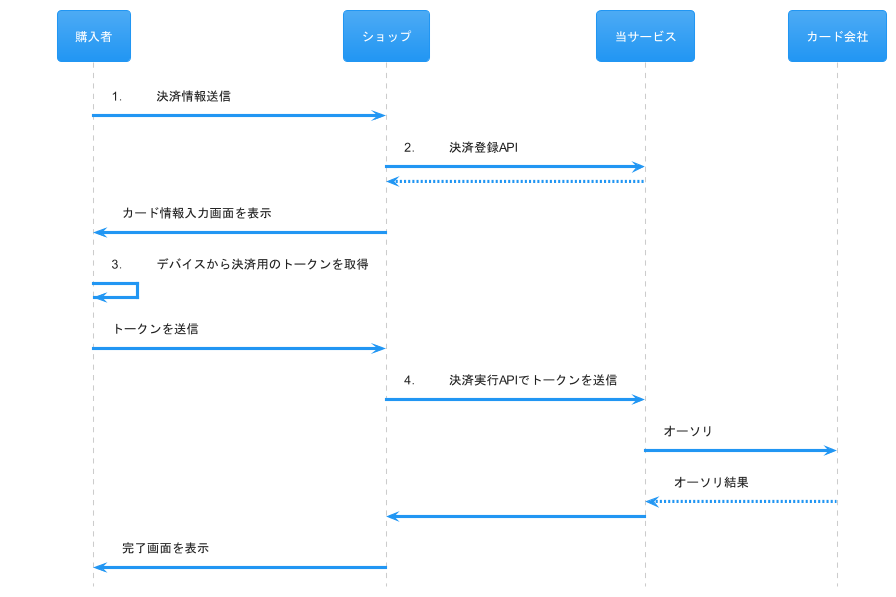
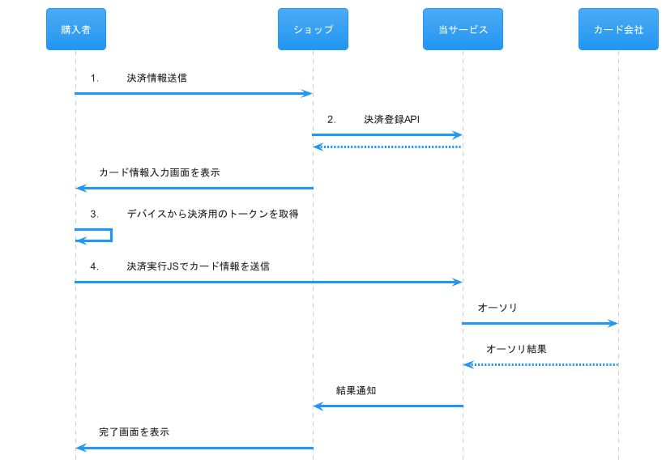

执行支付处理
fincode 使用支持 Google Pay 的设备生成的支付令牌处理 Google Pay 支付。
A. 在网站中获取支付令牌（JavaScript）
要在网站中接入 Google Pay，请先参阅 Google 提供的Google Pay for Payments > 网页文档。
网站使用由 CDN 提供的 Google Pay API 处理 Google Pay 支付。
※有关网站上的 Google Pay 按钮样式和使用规范，请参阅Google Pay 网页品牌指南。
1. 加载 Google Pay API
<!-- Google Pay APIの読み込み -->
<!-- 以下のscriptタグをHTMLのhead要素内に追加 -->
<script async src="https://pay.google.com/gp/p/js/pay.js"></script>
<!-- Google Pay ボタンの表示 -->
<div id="google-pay-button-mount-target"></div>
2. 从初始化 Google Pay 客户端到获取令牌
参考：https://developers.google.com/pay/api/web/guides/tutorial?full-example
/**
* PaymentsClientオブジェクトを初期化
*/
const paymentsClient = new google.payments.api.PaymentsClient({
environment: 'TEST' // テスト環境の場合は'TEST'、本番環境の場合は'PRODUCTION'
});
/**
* Google Pay APIバージョンを指定
*/
const baseRequest = {
apiVersion: 2,
apiVersionMinor: 0
};
/**
* 決済トークンをリクエストするための情報を設定
*/
const tokenizationSpecification = {
type: 'PAYMENT_GATEWAY', // 固定値: PAYMENT_GATEWAY
parameters: {
gateway: 'fincode', // 固定値: fincode
// fincodeのショップIDを指定してください。正しく指定されていない場合、fincodeの決済実行APIでエラーになります。
gatewayMerchantId: 's_01234567890' // fincodeのショップID
}
};
/**
* ショップの情報を設定
*/
const merchantInfo = {
merchantId: 'ABCDEFGHIJ01234', // Google販売者ID
merchantName: '○○ショップ' // Google Payシート上に表示されるショップ名
};
/**
* 取引の情報を設定
*/
const getTransactionInfo = (amount: String) => {
return {
currencyCode: 'JPY', // 通貨コード。fincodeではJPYのみ対応。
totalPrice: amount, // 決済金額。fincodeでは7桁までの整数値で指定。
totalPriceStatus: 'FINAL' // 決済金額が確定している場合は`FINAL`を指定。
}
};
/**
* 利用するカード認証方法とカードブランドを指定
*/
// allowedCardAuthMethods: 'PAN_ONLY'のみ対応。'CRYPTOGRAM_3DS'には非対応です。
const allowedCardAuthMethods = ['PAN_ONLY'];
const allowedCardNetworks = ['VISA', 'MASTERCARD', 'JCB', 'AMEX', 'DISCOVER'];
/**
* ユーザーから収集する請求先住所情報の設定
*/
const billingAddressParameters = {
// format: 未指定の場合、デフォルトで'MIN'が設定されます。
format: 'FULL', // 任意: 'MIN'または'FULL'
// phoneNumberRequired: 未指定の場合、デフォルトでfalseが設定されます。
phoneNumberRequired: true // 任意: 電話番号を要求する場合はtrue
};
/**
* 決済手段情報を設定
*/
const baseCardPaymentMethod = {
type: 'CARD',
parameters: {
allowedAuthMethods: allowedCardAuthMethods,
allowedCardNetworks: allowedCardNetworks,
billingAddressParameters: billingAddressParameters
}
};
const cardPaymentMethod = Object.assign(
{ tokenizationSpecification: tokenizationSpecification},
baseCardPaymentMethod
);
/**
* 決済データリクエストを設定
*/
const paymentDataRequest = Object.assign({}, baseRequest);
paymentDataRequest.allowedPaymentMethods = [cardPaymentMethod];
paymentDataRequest.transactionInfo = getTransactionInfo('1000');
paymentDataRequest.merchantInfo = merchantInfo;
/**
* Google PayボタンをDOMに追加する関数
* @param {HTMLElement} mountTarget Google Payボタンを追加するDOM要素
*/
const addGooglePayButton = (
mountTarget, // Google Payボタンを追加するDOM要素
onClick // Google Payボタンがクリックされたときのコールバック関数
) => {
const button = paymentsClient.createButton({
onClick: onClick, // Google Payボタンがクリックされたときのコールバック関数
buttonColor: 'default', // ボタンの色を指定
buttonType: 'long', // ボタンの形状を指定
});
mountTarget.appendChild(button);
};
/**
* Google Payボタンのクリックイベントハンドラ
*
* この関数内でfincodeの決済実行JSまたは決済実行APIに渡す決済トークンを取得します。
*/
const onGooglePayButtonClick = async () => {
try {
const paymentData = await paymentsClient.loadPaymentData(paymentDataRequest);
const token = paymentData.paymentMethodData.tokenizationData.token;
// トークンをBase64エンコード
// [TODO] Base64エンコード済みのencodedTokenをfincodeの決済実行JSまたは決済実行APIに渡して決済処理を実行します。
const encodedToken = btoa(token);
} catch (err) {
// 何らかの理由によりGoogle Payの決済トークン取得に失敗
console.error(err);
}
};
/**
* 決済可能かどうかを確認する
*
*/
const isReadyToPayRequest = Object.assign({}, baseRequest);
isReadyToPayRequest.allowedPaymentMethods = [baseCardPaymentMethod];
paymentsClient.isReadyToPay(isReadyToPayRequest)
.then((response) => {
if (response.result) {
// このとき、Google Payが利用可能
// Google Payボタンを表示する
const mountTarget = document.getElementById('google-pay-button-mount-target'); // Google Payボタンを追加するDOM要素
addGooglePayButton(mountTarget, onGooglePayButtonClick);
}
})
.catch((err) => {
// Google Payが何らかの理由で利用不可
// 参照： https://developers.google.com/pay/api/web/reference/error-objects#PaymentsError
console.error(err);
});
3. 查看集成核对清单
在网站中实现 Google Pay 后，请查看 Google 提供的Google Pay 网页集成核对清单。
B. 在 Android 应用中获取支付令牌（Kotlin）
要在 Android 应用中接入 Google Pay，请先参阅 Google 提供的文档Google Pay for Payments > Android。
※有关 Android 应用中的 Google Pay 按钮样式和使用规范，请参阅Google Pay Android 品牌指南。
1. 添加所需依赖项
在应用模块的build.gradle或build.gradle.kts中添加以下依赖项。
使用 Google Pay API 需要这些库。
dependencies {
implementation 'com.google.android.gms:play-services-wallet:18.1.3'
implementation 'com.google.android.gms:play-services-tasks:17.2.0'
}
2. 添加所需的清单设置
在项目清单文件的AndroidManifest.xml > <application>标签内添加以下设置。
启用 Google Pay API 需要这项设置。
<!-- Google Pay APIの設定: Wallet APIを有効にする -->
<meta-data
android:name="com.google.android.gms.wallet.api.enabled"
android:value="true" />
3. 从初始化 Google Pay API 到获取令牌
参考：https://developers.google.com/pay/api/android/guides/tutorial?full-example
import android.util.Log
import com.google.android.gms.wallet.PaymentDataRequest
import com.google.android.gms.wallet.PaymentsClient
import com.google.android.gms.wallet.Wallet
import com.google.android.gms.wallet.WalletConstants
import org.json.JSONArray
import org.json.JSONObject
/**
* このサンプルではMainActivityクラス内でGoogle Pay APIを使用していますが、プロジェクトの任意のクラスで同様の実装が可能です。
*/
class MainActivity : AppCompatActivity() {
// Google Pay APIのクライアント
private lateinit var paymentsClient: PaymentsClient
// Activity生成時にpaymentsClientを初期化
override fun onCreate(savedInstanceState: Bundle?) {
super.onCreate(savedInstanceState)
// PaymentsClientを初期化
paymentsClient = Wallet.getPaymentsClient(
this,
Wallet.WalletOptions.Builder()
.setEnvironment(WalletConstants.ENVIRONMENT_TEST) // テスト環境: ENVIRONMENT_TEST, 本番環境: ENVIRONMENT_PRODUCTION
.build()
)
checkGooglePayAvailability(
paymentsClient,
onAvailable = ::onGooglePayAvailable
)
}
// APIバージョンを指定
private val baseRequest = JSONObject().apply {
put("apiVersion", 2)
put("apiVersionMinor", 0)
}
// 決済トークンをリクエストするための情報を設定
private fun getTokenizationSpecification(): JSONObject {
return JSONObject().apply {
put("type", "PAYMENT_GATEWAY")
put(
"parameters",
JSONObject().apply {
put("gateway", "fincode")
put("gatewayMerchantId", "s_01234567890") // fincodeのショップID
}
)
}
}
// ショップの情報を設定
private fun getMerchantInfo(): JSONObject {
return JSONObject().apply {
put("merchantId", "ABCDEFGHIJ01234") // Google販売者ID
put("merchantName", "○○ショップ") // Google Payシート上に表示されるショップ名
}
}
// 取引の情報を設定
private fun getTransactionInfo(amount: String): JSONObject {
return JSONObject().apply {
put("currencyCode", "JPY") // 通貨コード。fincodeではJPYのみ対応。
put("totalPrice", amount) // 決済金額。fincodeでは7桁までの整数値で指定。
put("totalPriceStatus", "FINAL") // 決済金額が確定している場合は`FINAL`を指定。
}
}
// 利用するカード認証方法とカードブランドを指定
private val allowedCardAuthMethods = JSONArray().apply {
put("PAN_ONLY")
}
private val allowedCardNetworks = JSONArray().apply {
put("VISA")
put("MASTERCARD")
put("JCB")
put("AMEX")
put("DISCOVER")
}
// ユーザーから収集する請求先住所情報の設定
private val billingAddressParameters = JSONObject().apply {
put("format", "FULL") // 任意: 'MIN'または'FULL'
put("phoneNumberRequired", true) // 任意: 電話番号を要求する場合はtrue
}
// 決済手段情報を設定
private val baseCardPaymentMethod = JSONObject().apply {
put("type", "CARD")
put(
"parameters",
JSONObject().apply {
put("allowedAuthMethods", allowedCardAuthMethods)
put("allowedCardNetworks", allowedCardNetworks)
put("billingAddressParameters", billingAddressParameters)
}
)
}
// 決済データリクエストを設定
private val paymentDataRequest = JSONObject(baseRequest.toString()).apply {
put("allowedPaymentMethods", JSONArray().put(baseCardPaymentMethod))
put("transactionInfo", getTransactionInfo("1000"))
put("merchantInfo", getMerchantInfo())
}
// Google Payが利用可能かどうかを確認
private fun checkGooglePayAvailability(
paymentsClient: PaymentsClient,
onAvailable: () -> Unit,
) {
val isReadyToPayRequestJson = JSONObject(baseRequest.toString()).apply {
put("allowedPaymentMethods", JSONArray().put(baseCardPaymentMethod))
}
val isReadyToPayRequest = IsReadyToPayRequest.fromJson(isReadyToPayRequestJson.toString())
paymentsClient.isReadyToPay(isReadyToPayRequest)
.addOnCompleteListener { completedTask ->
try {
val result = completedTask.getResult(ApiException::class.java)
if (result !== null && result) {
// Google Payが利用可能
onAvailable()
} else {
// [TODO] Google Payが利用不可の場合のエラーハンドリング
Log.e("Google Pay", "Google Payが利用不可")
}
} catch (e: Exception) {
// [TODO] Google Payが利用不可の場合のエラーハンドリング
Log.e("Google Pay", "Google Payが利用不可")
}
}
}
// Google Payが利用可能な場合の処理
private fun onGooglePayAvailable() {
// Google Payボタンを表示する
// [TODO] Google Payボタンを表示する処理
// [TODO] Google Payボタンのクリックイベントハンドラとして`onGooglePayButtonClick`を設定
}
/*
* Google Payボタンがクリックされたときの処理
*
* この関数内でfincodeの決済実行APIに渡す決済トークンを取得します。
*/
private val onGooglePayButtonClick = {
paymentsClient.loadPaymentData(paymentDataRequest)
.addOnCompleteListener { task ->
try {
val paymentData = task.getResult(ApiException::class.java)
val paymentMethodDataJsonStr = paymentData.toJson()
val paymentMethodData = JSONObject(paymentMethodDataJsonStr).getJSONObject("paymentMethodData")
val token = paymentMethodData.getJSONObject("tokenizationData").getString("token")
// トークンをBase64エンコード
val encodedToken = Base64.encodeToString(token.toByteArray(), Base64.NO_WRAP)
// [TODO] Base64エンコード済みのencodedTokenをfincodeの決済実行APIに渡して決済処理を実行します。
} catch (e: ApiException) {
// Google Payの決済トークン取得に失敗
// [TODO] Google Payの決済トークン取得に失敗した場合のエラーハンドリング
Log.e("Google Pay", "Google Payの決済トークン取得に失敗")
}
}
}
}
4. 查看集成核对清单
在 Android 应用中实现 Google Pay 后，请查看 Google 提供的Google Pay Android 集成核对清单。
执行支付
使用支付执行 API
将在网站或 Android 应用中取得的 Google Pay 支付令牌填入 fincode 支付执行 API 请求体的token参数，执行支付处理。

- 买家点击 Google Pay 按钮。
- 商户调用 fincode 的登记支付接口。登记可提前完成，但须在执行支付前完成。
- 商户从设备取得支付令牌。
- 商户将支付令牌填入支付执行 API 请求体的
token参数，并执行支付。使用 EMV 3-D Secure 时，请在return_url参数中指定验证完成后的跳转 URL。 - （执行支付时指定
return_url的情况下）支付执行 API 响应体的redirect_url含启动 EMV 3-D Secure 验证的 URL，请在浏览器中重定向到该 URL。 - EMV 3-D Secure 验证完成后，系统自动重定向到指定的
return_url。
※EMV 3-D Secure 可以沿用卡片支付中的实现。验证时如果不使用return_url/redirect_url，并希望更细致地控制流程，请参阅进阶：从头实现启用 3D Secure 验证的卡片支付及其中的实现示例。
使用支付执行 JS
在网站取得 Google Pay 支付令牌后，将令牌填入支付执行 JS 的transaction.token参数，并执行支付处理。

-
买家点击 Google Pay 按钮。
-
商户调用 fincode 的登记支付接口。登记可提前完成，但须在执行支付前完成。
-
商户从设备取得支付令牌。
-
商户将支付令牌传给支付执行 JS并执行支付。
-
（执行支付时指定
return_url的情况下） 支付执行 JS响应体的redirect_url含启动 EMV 3-D Secure 验证的 URL，请在浏览器中重定向到该 URL。 -
EMV 3-D Secure 验证完成后，系统自动重定向到指定的
return_url。
※EMV 3-D Secure 可以沿用卡片支付中的实现。验证时如果不使用return_url/redirect_url，并希望更细致地控制流程，请参阅进阶：从头实现启用 3D Secure 验证的卡片支付及其中的实现示例。